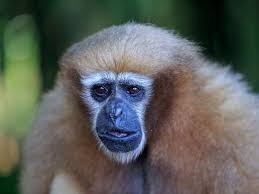

Work in Progress, please mind the gibbons!
Animation
While I certainly do not claim to be an artist, I feel that these animation projects should be showcased nonetheless. Working in ToonBoom's Harmony gave a significant learning curve. Peg-based animation was daunting at first, but I've come to the understanding of just how easy it eventually makes the whole process. For the "World's Strongest Man" animation, I rigged the entire character, drew the stage and props based off references, and then finally animated the entire thing. If I'm to honest, the actual animation, i.e. te posing and keyframing, was actually pretty enjoyable. However the drawing and rigging were rather difficult and not that enjoyable. Overall, however, I'm still proud of the final product and am glad I got to experience the animation pipeline.
Graphic/Motion Design
Film
Film has surprised me as I began to explore it as of late. The physicality of a film set when compared to the digital landscape of other mediums of creation facinates me. From setting up lights, to fiddling with camera settings and placements, even to the acting within it are very fun to me and I feel that this is reflected in the quality of my work. For "The Florida Creature Feature" I was in charge of most of the pre-production, a good chunk of the production sections, and audio recording for post-production. For example: story formulation, reference gathering, some script writing, portraying The Florida Creature, and recording voicovers and foley. All in all the entire experience was fascinating, and it was super fun to be part of a team that made such an incredibly funny story. Alongside this, I've also experimented with compositing and post editing in Premiere Pro, which are shown along side "The Florida Creature Feature." I find it difficult but interesting to take raw footage and transform it into something else entirely, and am looking forward to improving my skills in the area.
Photography


Spending time around cameras in film has inevitably led me towards trying my hand at photography too. After learning the basics of cinematography and how to manipulate the camera to do what you want, experiementing with photography comes as a very familiar experience. While I don't personally own a camera other than my phone to take photos with, I rented a camera out for a weekend and took some photos on a nature walk in the Gainesville Sweetwater Nature Preserve, which provided me with a wide range of subject matter to practice on, the best of which are featured just above.